信息安全原理
信息安全原理
关于信息安全的入门课程，主要偏理论部分，coding的部分较弱。期末考试准备的还算充分，但是最后精准考到了没详细准备的部分，就寄了(悲)。
信安原期末复习
- KERBEROS
- SPAM
- SSL/TLS
Information Security
Learn From History
- 太公兵法 中国第一个cipher
用不同长度的符来表示不同的信息，把要发的文书分成三份，让三个人去发，三个人相互不知道，也无法了解完整的信息。 - 豪密 党的第一个密码
由周恩来总理开发 - Phaistos 圆盘形的密码
- Caesar cipher 最早的Substition cipher（一共25种 可能得secret key）
- Scytale Cipher 棍棒做密码
- 什么是
Information Hiding / Steganography 隐写术
- 就是类似于把头发剃掉然后在上面写东西，等头发长出来
-
还有一些其他的例子例如
-
Egg Writing
- Microdot
- Bacon'c cipher
密码学的历史性时刻
总得来说，密码学（cryptography）是keep secret，上述的方法是人类历史上的精华，但是密码学的scientization要从Kerckhoff原则开始，除此以外还有一些比较历史性的时刻
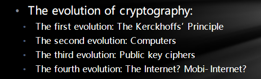
Kerckhoof's Principle
A cryptosysyem should be secure even if everything about the systen, except the key, is public knowledge.
该原则有很多影响
- 让密码学从Prehistoric到了classic时期，从Experience到了Science
- 并且让大规模生成cipher machine成为可能
- 加强了安全性：Anything invariable will be disclosed (所有不变的东西都是会被泄露的)
- 从经验变成了科学
Electronic computer
- 计算机诞生的原因是在二战中解密 ENIGMA
- computer accelerate both encryption and decryption
- Shannon's information Theory 香农信息理论的出现，使得密码的理论体系++
- 现代加密cipher（DES）的出现
- 从机器变成了电子
Public Key Ciphers
- 无需分享secret key的情况下，让两者之间共享大量加密信息，改变了密码学研究的方向
- 最广泛使用的公钥加密算法 RSA的出现
Mobile Internet or AI
- 扩大了密码学的内涵（connotation）和应用范围（Extension）
Connotation of computer security
Significance of computer security
举了一堆不安全产生的例子
distinctness of computer security
都是相对于纸质文件而言
- 无法区分original原件和copy件的区别
- 修改可以不留下任何痕迹
- 容易彻底删除 easy to delete
- 数字签名只依赖于二进制信息
Characteristics of computer security
- Comprehensiveness 系统安全程度取决于其最薄弱的安全环节
- Procedural 程序性 安全模型是一个螺旋上升的模型，不会突变 constant back-and-forth rising
- Dynamic 动态性 安全模型是不断进步的 progressing
- Hierarchy 层次性 有multi-level 的技术来保障
- Relativity 相对性 都是相对的，没有绝对安全的系统
Concepts of computer security
3 Elements of computer security
- Confidentiality 保密性 别人是否能看到我们的data
- Integrity 完整性 我们的数据能否被非法篡改（要区分用户和非法用户，银行数据篡改）
- Availability 可用性 我们的资源是否可用，安全是否影响了我正常使用某个功能
还有第四个性质 Authenticity / Non-repudiation 认证性或者说是不可否认性，我们不能否认发/收了信息
Concepts of computer security
- Asset 资产 我们要保护的东西
- Threat 威胁 要对抗的东西
- Vulnerability 漏洞 保护工作/安全系统中的弱点
- Risk 风险 = Asset + Threat + Vulnerability
R = A + T + V - control
type of security threat
按照method分和按照有意无意分
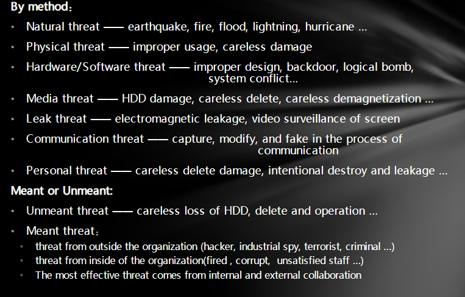
type of security attack
例子见PPT，第二个是被动攻击（预防比检测更有效），其他是主动攻击（易于检测难于预防，可以从损坏中修复）
- Interruption 容易detect 让系统中的资产（asset）被破坏或者无法使用 -> availablility
- Interception 难detect，不能完全避免 以非法身份访问asset 不能被完全避免 -> Confidentiality
- Modification 可以被prevent（用数字水印）以非法方式修改 tamper asset -> Integrity
- Fabrication 未经授权把仿造对象插入系统，并且假装是授权方发送的 -> Authenticity
- 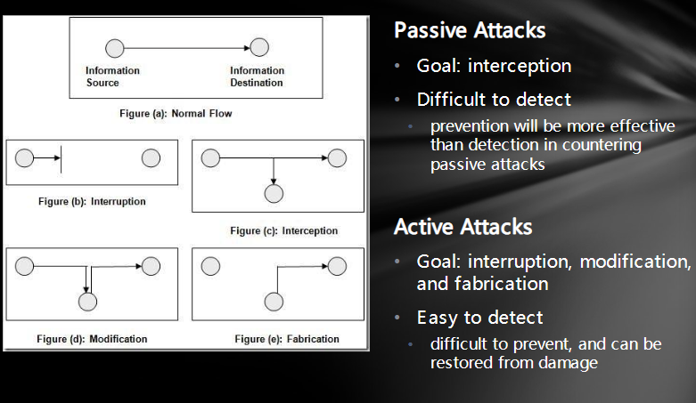
Replay attack
验证身份的工作中，冒充者直接使用窃听到的上一次验证信息进行验证，如果能够验证成功，就说明重放攻击成功了
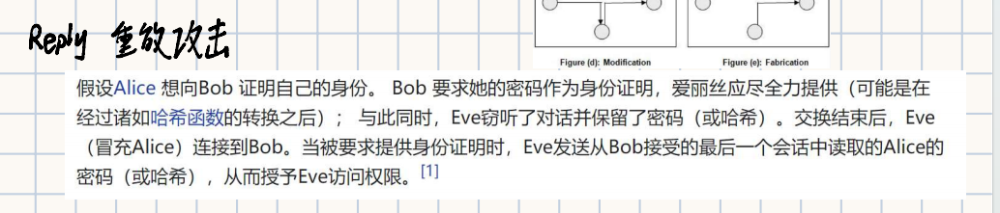
Against Security Threats 的目标
- Prevent
- Detection
- Recovery
Basic：系统可以很快恢复或者功能
Advanced被攻击的情况也能正常运作
Concepts & History of cryptography
Concept of cryptography
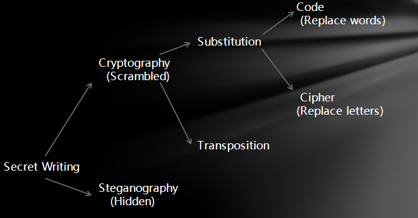
基础的概念 Plaintext(P)/Cleartext(一般不用这个)，Ciphertext(C)，Encryption(E())，Decryption(D())，Key(K)
\(C =E_{K}(P)\) \(P = D_{K}(C)\)
常见的Encryption算法
- Substitution 置换，就是建立一个映射，像是hash Caesar密码属于这种
- Transpostion 位移，对原文移动几位
Cryptanalysis 密码分析上的一些概念
-
Amount of information available to the attacker
-
Ciphertext-only 只展示密文
- Known-plaintext 知道几组明文-密文对应
- Chosen-plaintext 可以在一定范围内选择几组明文-密文对应
- Adaptive chosen-plaintext 可以自适应选择明文让其加密
- Related-key attack 让其再不同密钥条件下解密，且两个密钥关系已知
-
Result of Attack / Analysis
-
total break 知道密钥
- global deduction 虽然不知道密钥，但是构建出了一套等效的算法进行加密和解密
- instance deduction 可以获取以前未知的明文密文对
- information deduction 从以前未知的密文上获取信息
- Distinguishing algorithm 可以区分密码和随机序列
History of cryptography
密码加密的发展大概有着这三个阶段
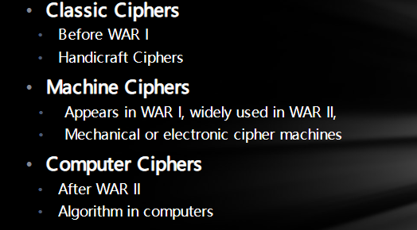
第一阶段
一些古典的密码，举了一些例子，例如Caesar cipher
- Belt/Stick cipher 把条带绑在棍子上，特定的棍子粗细可以得出正确的结果
- Ancient Greek Cipher 列表将字母转换成数字 例如A就是"11"
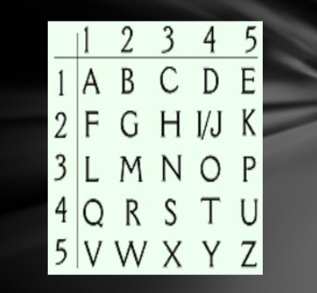 - Caesar 密码
- Queen Mary's Cipher 23个字母符号和35个单词符号，其中有四个NULL ？
对于上述early ciphers 都可以采取Frequency Analysis来进行分析解决
但是也有些方法会使得Frequency Analysis变得困难
- Vigenere 将Caesar密码的key变成一个单词，例如这样
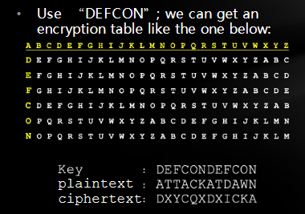
破解的时候需要根据重复序列的长度，来确定key的长度，再转换成常规的Caesar密码来 - Kryptos Sculpture
- Book Cipher 给一本书的所有单词编号，密文由编号数字组成，明文就是找到编号对应单词的首字母
第二阶段
Machine cipher，这一阶段的最高成就是德军里的ENIGMA机器
1个rotor（转子）定义了周期为26的字母替换密码(polyalphabetic substition cipher)，Basic Version有3个rotors，定义了\(26^{3}\)加上本身3个rotor有\(A_{3}^{3}\)的排列，总共有17576*6的替换密码，Extended版本可以更多rotor，可以对抗Frequency Analysis
Plug board定义了一个交换机，交换6对（也就是12个）字母，其余14个不交换
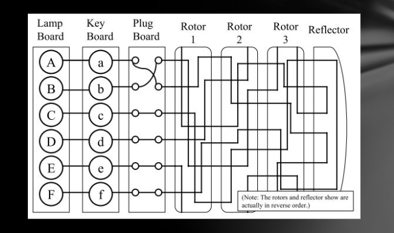
Enigma Principle，对于plug board我们存在一些数据
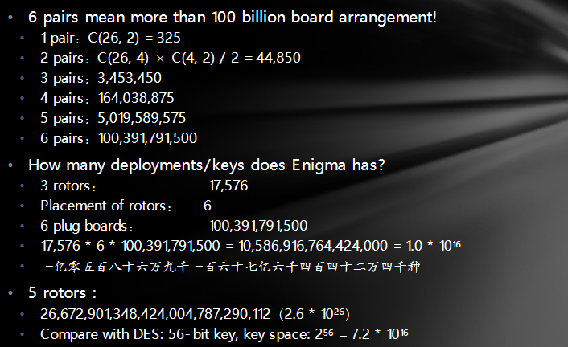
用Kerckhoff原则来分析Enigma，其是符合Kerckhoff原则的
- Algorithm为整个机器的物理构成，三个rotor （是invariable or hard to change）
- Key为rotor的初始状态（initial position and sequence）和plug board configuration （是variable or easy to change）
crack Engima
- 阶段一 Espionage（侦查） 获取Engima机器本身，并且侦测到德军的Enigma使用方法，有Day key 和 Message key，Day key加密Message key; Message key加密Message
- 阶段二 Misuse 诱使德军错误使用Engima，将Message Key放在密文的开头重复加密并发送，使得他人获取了规律？pattern
- 阶段三 Mathematics(数学上的解决) 证明了检查表中的连接长度取决于rotor而不是plug，本质也是暴力检查
最后还有几页
Symmetric secret key cryprography and Asymmetric
Symmetric cryptography
对称密钥加密算法，也叫做Shared key ciphers, 和 Secure key ciphers，是密码学中的一种加密算法，complies with the Kerckhoff's principle
block cipher
将输入的bit切成n-bit的section，对每个section单独加密，每一块之间没有dependency，history等联系
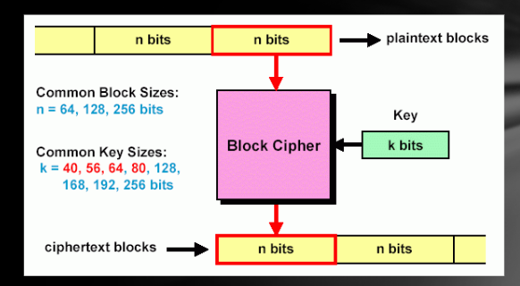
In a good block cipher, each output bit is a function of all n input bits and all k key bits.
feistel cipher structure
几乎所有现代的对称加密算法都基于这个结构，还是在block ciphers
-
Diffusion 使得密文的统计特性和明文间的关系尽可能复杂
-
iteratively 交换左右两半
-
Confusion 使得密文的统计特性和密钥之间关系尽可能复杂
-
Larger Block size,常见为64 bit or128 bit
- Larger key length，常见为128 bit
- Number of rounds, 常见为16
- Sub-key generation algorithms：更复杂的生成算法
- Round Function：更复杂的 F 复杂度
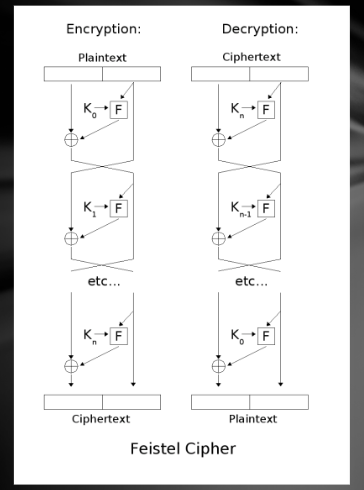
DES Algorithm——progress
Data Encryption Standard，是用64-bit blocks，和56-bit的key，有一些特征
- Strong avalanche effect 雪崩效应，微小输入的改变，输出改变巨大
- 强大的anti-crack能力，只能被暴力
- 在如今56-bit key是不够保险的
crack DES
虽然对于DES还是只能枚举，但是56-bit key的计算量，在1999的超级计算机上只需要花费22小时
Triple DES
使用了三个不一样的key，加密解密再加密，key的size到达了56*3 = 168，PGP等工具就使用了这个算法，同时如果设置其中几个key相同，就可以完成与以前密码系统的向后兼容性（provide backward compatibility）
一些其他的对称加密算法
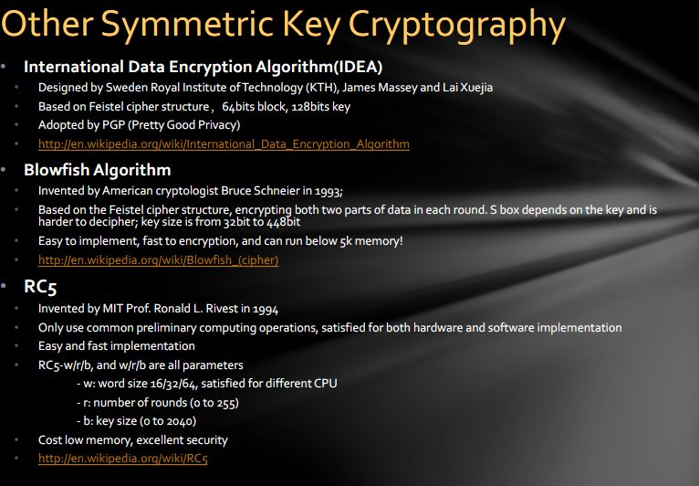
New international Encryption Standard——AES
AES advanced encryption standard 2001 产生，替代了DES和3DES等，因为3DES虽然可用，但是操作起来比较慢，并且block size只有64 bit，而AES有以下特点
- block size 为 128 bit
- key size 为 128/192/256 bits
- immune to all known attacks
- 执行起来很快且代码紧凑
- 设计简单
mode of operation
之前的block cipher都是对于一个固定长度的bit块将进行加密，mode of operation 是告诉我们如何重复地把加密操作应用于任意长度的信息块上
有一系列的方法比如
- ECB ，见PPT 20
- 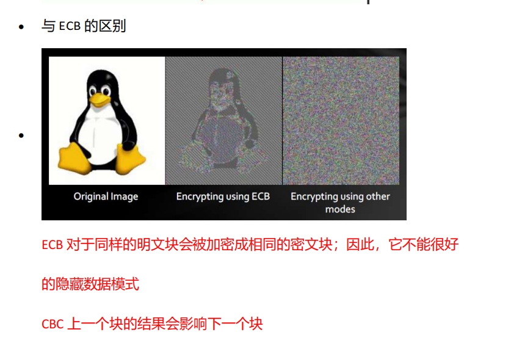
除了block cipher以外，还有stream cipher
The key distribution problem
KDC key distribution center
Public key cryptography
secret key cryptography 所存在的问题
- 密钥分发问题
- Alice无法证明自己到底有没有发信息，有plagiarizes的嫌疑 剽窃
公钥系统的一些元素
- public key KU
- private key KR
成就一个成功的公钥系统的关键是找到一个one-way function就是正向容易反向（inverse）难的问题
Requirement of public key cryptography
- key generation is easy
- Encryption is acceptable in time
- Decryption is acceptable in time
- 攻击者的信息无法获取到明文和私钥
DH 算法 diffie-hellman algorithm
我们有一个prime number p 和 一个 Integer g
- g is a primitive root of p
- 对于任意一个整数A（\(0\leq A\leq p-1\)），我们能唯一找到一个exponent a是的
\(A = g^amod\ p\) 其中 \(0\leq a \leq p-1\) - 我们称a是A的discrete logarithm 离散对数 base g and mod p
- p 和 g是固定的，a推出A是容易的，但是A推出a是不容易的
- 并且我们有
\(g^{ab} mod\ p = (g^amod \ p)^b mod \ p = (g^bmod \ p)^a mod \ p\)
通过以上这些理论基础，我们就可以建立出一个公钥系统，Principle of Diffie-Hellman
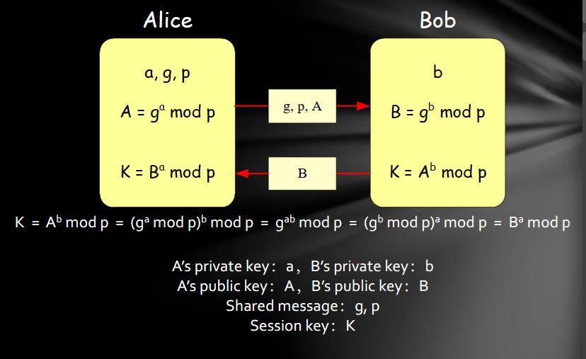
Example of Diffie-Hellman
DH算法的中间人攻击 man-in-the-middle attack, 实际上Alice和Bob都是与Carol交换了Session key
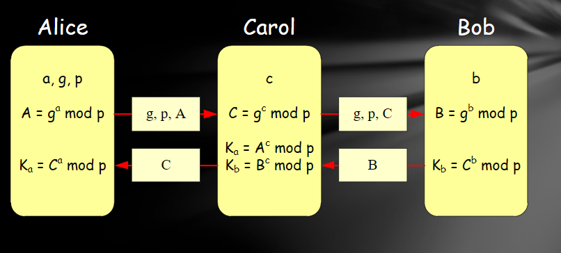
RSA algorithm
其单向函数one way function是 大质数乘法，反之就是大合数的分解，我们定义\(\phi(n)\)是小于n并且与n互质的正整数的个数(其被称为Euler's totient function)
- 如果n为质数，显然 \(\phi(n) = n-1\)
- 如果n为合数，我们存在一个数学定理来计算 \(\phi(n)\) 对n做质因数分解，记录其中各不相同的质数，记为 \(p_i\) 我们有
-
\[ \phi(n) = n(1 - \frac{1}{p_1})(1-\frac{1}{p_2})...(1-\frac{1}{p_k}) \]
- 对于都为指数的p，q，我们有\(\phi(pq) = \phi(p)\phi(q)\)
我们有Euler's theorem
- 如果n和a都是正质数，有\(a^{\phi(n)} \equiv 1(mod \ n)\) 证明？
有了以上理论基础，我们开始思考RSA的过程
- 我们选择两个指数p，q（很大的指数，至少是100位），并且设 \(n=p*q\)
-
找到两个数e，d，满足
-
e和\((p-1)(q-1)\)互质，并且\(1<e,d<(p-1)(q-1)\)
- \(e*d\equiv 1(mod(p-1)(q-1))\)
- 其中e，n是公钥，d是私钥
- 加密：我们有明文m，找到Bob的公钥，加密为\(c = m^e mod\ n\)，把c发送给Bob
- 解密：我们有密文c，\(m = c^d mod\ n\)
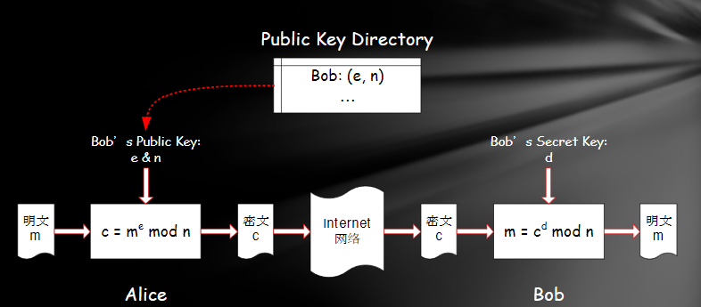
根据上面的理论部分，我们可以证明RSA的正确性和安全性
见PPT 48左右内容
Security service
digital signature
密码学的加密解密系统无法解决一个问题，比如Bob捏造一个信息，说是Alice发的；Alice发了一个信息，但事后其否认了这一点。
我们日常生活中会使用Signature，也就是签名来解决这个问题
对于手写的Signature，有以下feature
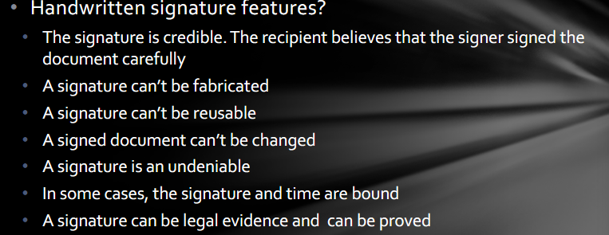
对于digital signature, 有以下要求
- 可以与相应的文件绑定 bound with signed document，防止签署的文件被修改
- 收件人可以验证，任何人不能伪造
- 发件人不可否认这个签名 需要使用发件人unique的信息
- 第三方可以检查和确认这个签名
- 可以验证前面的作者，日期，时间，内容等
使用公钥加密系统，可以支持digital signature
- 发送者用其私钥对文件进行签名
- 接受者用发送者的公钥进行认证
- 发送者用接受者的公钥进行加密
- 接受者用自己的私钥进行解密
- 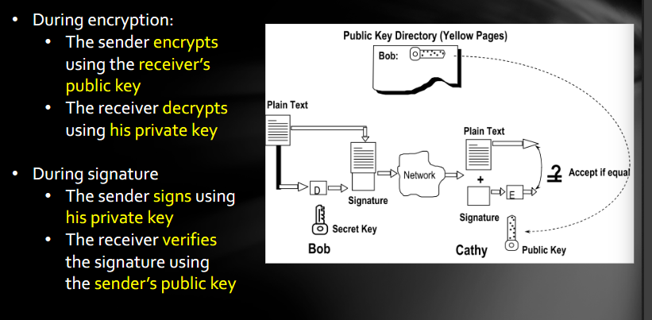
以RSA系统为例 * 看11页
one-way hash algorithm
当我们需要签名的文本很长的时候，我们往往会选择对其hash-value进行签名，也就是我们需要一个单项hash函数
单向hash函数的一个特点就是其输出的长度是固定的，比如MD5是128位；SHA-1是160位
一个好的单向hash函数有以下特点
- 正向容易计算
- 反向难计算，固定给一个hash值h，我们无法找到一个m，使得\(H(m) = h\)
- 难以发生冲突，也就是说难以找到两个m，使他们拥有相同的hash_value
一些常见的单向hash函数
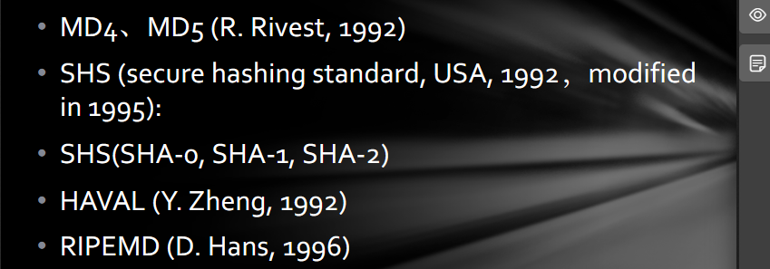
以MD5为例
MD5的处理分成两部分，padding和hashing*
- padding将整个字符串切割成一系列512-bit的小块
- 每个小块转换成16个32-bit的整数 见P16
针对单向Hash函数的攻击一般有两种
-
Preimage attack 对于特定的hash value，试图找到一个Message
-
Preimage resistance 给定hash value 找不到message
- Second-preimage resistance 给定一个message，找不到另一个message与其有相同的hash value
- Collsion attack 试图找到两个不同的输入，拥有相同的hash value
对于长明文的签名流程 P21
MAC
MAC，也即Message Authentication Code，也被成为 keyed hash function，是用于检测消息是否被篡改，也即消息的完整性的。
我们介绍其中几个
HMAC
是Hash based message authentication code，使用不同的单向hash函数来构建HMAC，相比于单向hash函数，HMAC更难以发生collision，例如HMAC-MD5, HMAC-SHA1，虽然其本身对应的单向hash函数已经是不安全的了，但是对应的HMAC仍然是有效的
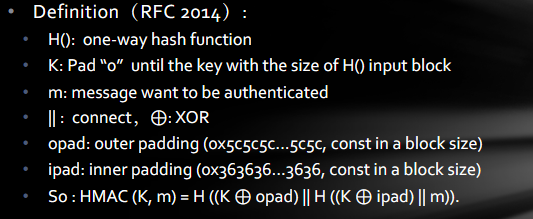
CBC-MAC
cipher block chaining message authentication code. wjgg在这里写的很清楚
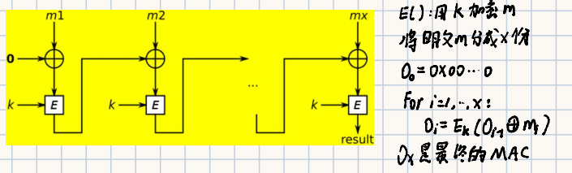
difference of MAC and digital signature
MAC
- 接受者和发送者需要共享一个密钥
- 只能被特殊的接受者认证
- 不提供，不可否认性
- 但是MAC更快，并且不可否认性不是所有时候都需要的
Digital Signature
- 可以被所有的接受者认证，只需要发送者的公钥
- 提供不可否认性
PGP
PGP 是 Pretty good privacy，是一个广泛使用的邮件和文件存储的安全应用，有以下服务，数字签名，完整性检查，信息加密，数据压缩，等等 见PPT29
Authentication
- 你是谁
- 你如何向他人或电脑系统证明你是你所宣称的存在
- 需要控制访问的系统都需要处理这个问题
有很多东西可以帮助我们做认证
password-based authentication
系统存储认证用户的密码，用其来检查
- 在密码传输过程中不太安全
- 密码的存储不太安全
- 用户可能会偏向于容易记忆的密码，容易被破解
现代的系统也对密码认证做了一系列的保护，比如限制尝试密码的次数，严格化修改密码的流程等等
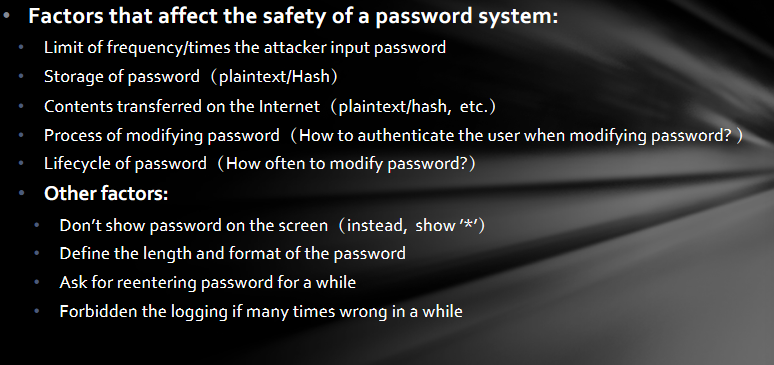
早期密码存储的一些实现
- 只存储密码的hash value
早期的Unix密码
Traditional dictionary attack
- unix 的password file 是world readable
-
很多密码来自于很小的dictionary，对字典中的词进行hash，并比较hash值，如果匹配成功了就破解了该密码
-
攻击者甚至可以实现计算完所有的dictionary的hash值，进行匹配
对抗攻击的机制
- salting 计算hash value时，会将salt加入密码后再做hash，salt是初次设定密码时产生的随机数，使得攻击者在针对一个password的时候，需要对每一个dictionary word做一次计算，使得字典攻击变得困难，但是仍然可能
- Shadow password, 将password的hash value存在一个仅有系统管理员root可读的文件中，并且添加密码的expiration dates 到期日期
密码使用的一些常见错误以及需要注意的点 PPT 13
PPT13
biometric/behaviometric authentication
包括指纹，笔迹等
- 优点在于不太容易被偷窃，损失和遗忘
- 缺点在于 检测装备比较昂贵，比较算法的精确性存在问题，并且隐私问题比较严重
生物认证的错误率
- false accept rate
- false reject rate
- 如果上述两个概率相同，称为 equal error rate
- Increasing the threshold value of accept will increase the false accept rate and reduce the false reject rate.
对于一个生物认证系统需要考虑的内容
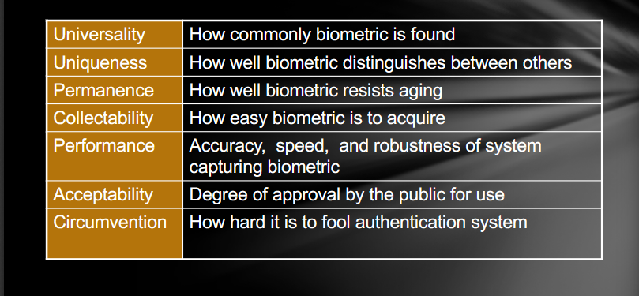
讨论问题 密码会消失吗
NetWork Authentication
互联网两端的用户如何做认证，有一些方法和
私钥系统和公钥系统都可以解决这个问题，一般都是使用公钥系统，可以对抗重放攻击
下图中v5使用的是私钥系统，v6使用的事公钥系统

Kerberos
在分布式的情况下，服务器限制授权用户的访问，区分每类用户需要的服务
有一系列的目标
- Safety
- Reliablity
- Transparency
- Scalability
具体的操作和概念细节 见PPT26
基于ticket进行认证
缺陷
- 依赖系统时间的同步
- guessing attack 如果密码很弱容易被猜到的话是有问题的
- key storage 是个问题
Authorization
authorization基本等同于访问控制，有一些概念
- Subject 一个能够访问东西的实体，包括user和应用进程等等
- Object 被访问的东西 file，program，data等
- Privilege Subject对于Object的某种权限，包括read, write, delete等等
Secure Access Control
- 三个主要功能 Authorization, Revoke, Checker
- 两个阶段 Make Policy, Execute Policy
安全访问控制有三种Model
- DAC Discretionary Access Control 自主访问控制
- MAC Mandatory Access Control 强制访问控制
- RBAC Role-Based Access Control
DAC
根据访问主体（Subject）的身份和权限来做出决定，存在一些特权的主体可以把权限授予他人
缺点是访问权限控制不严格
Access control matrix
有两部分组成，分别是横纵的关系
- Access control list: 每一个Object都关联着a list of Subject permitted to access it.
- Capability list: 对于每个Subject，都关联着a list of Object it can access
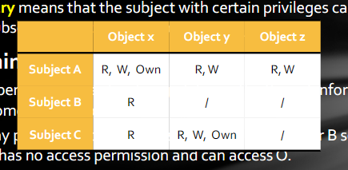
例子
Unix OS 使用 accessing control list 来管理文件
- 将user区分成三类：文件的Owner（u），和file owner分在同一组的(g)，其他用户(o)
- 将permission分为三种: Read r, Write w, Execute x
- 用9个bit来indicate文件的access control list, 1-3是owner的权限， 4-6是group member的权限，7-9 是other的权限
MAC
给Subject和Object以不同的安全等级，通过安全等级来判断是否有权限
Bell-LaPadula Model 用来ensure confidentiality 确保机密性
- No Read Up 不能阅读高level的file
- No Write Down 不能写低level的file
Biba Model 用来Ensure integrity 确保完整性
- No Read Down
- No Write Up 与上述相反
Secure Label 可以防止 Trojan Horse 见PPT 39 40
Covert Channel 隐蔽通道
其使用系统资源但是不通知Subject，这是一种computer security attack，在进程之间传输信息
利用系统资源进行通信的通道，通过一些系统资源的变化来获取高密文档在做什么
这种攻击无法被 eliminated, 可以有一些应对措施，比如限制共享资源（让他们仅在同一个密级共享，那么就无法被其他process获取），和限制带宽（bandwidth）例如加入噪音干扰等
Orange Book 是 美国的MAC标准（TCSEC），中国也有GB17859-1999
RBAC
DAC的安全太弱，MAC的安全太强，并且manage的workload都很大
RBAC是modern business 对于信息安全的要求的结果，需要减轻安全管理员的工作负担
起源于一部分操作系统，RBAC给每个user以a set of roles,
一些基础的概念
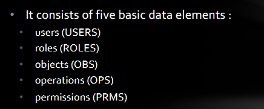
-
Role 每个role表示一组user被关联到一组权限，属于这个role的user可以执行相关的操作
-
group是一组users
- role 一组user + 一组 permission 是个多对多的模型
- Relationship 多对多，user被对应到roles，roles被对应到确定的permission
- Session User到active role的映射
Hierarchical RBAC Model
角色结构化继承是一种很自然的方式去反映组织的认证和责任
例如r1继承了r2，r2的权限也变成了r1的权限，继承关系满足离散中的partial order, 有这三种性质Reflexive, Transitivity, Antisymmetry
Constraint RBAC Model
- SSD 用户，角色分配的约束关系，一个用户不能同时分配两个SSD角色
- DSD，不同时间不同权限
RBAC的优势
The Principle of Security Access Control
-
Authorization management——决定谁有权去修改 Allowed Access
-
MAC Allow Access由Subject和Object的Security level决定
- System security administrator 确认Subject的Security level
- Object的Security Level由创建它的user/process确定
-
DAC 有多种管理方法
-
Centrialized management
- Hierarchical management
- Ownership management
- Collaborative management
- Distributed management
- RBAC
- Minimize Rights 权限最小化，由root用户分配给三类特权用户
-
System administrator
- Security administrator
- Audit administrator
- P54
- 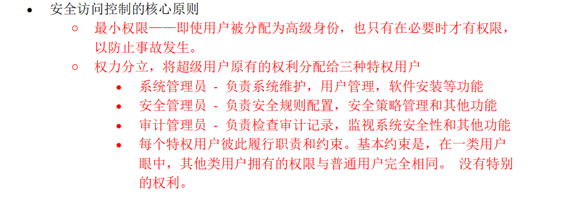
Internet and Security
Thompson's Compiler
- 修改了编译器，使得其compile login程序的时候，可以使用一个固定的密码登录所有账号
- 再次修改compiler，使得编译器在编译的时候自动加一段代码，使得这段编译器在编译正常编译器，变成一个恶意编译执行文件
- recompile the compiler
- delete the source containing
The point：源代码级别(source-level)的认证和检查是无法彻底保护安全性的
having source code helps but does not ensure you're safe
Trojan concealing —— rootkit
rootkit是一个二进制可执行文件，使得恶意用户可以进行管理员级别的控制，rootkit就是不让管理员检测到木马等存在
有一系列的例子
detect and remove
-
手动remove rootkit对于正常用户来说是有困难的，所以有些tools被提供用来保护
-
但是一些安全软件，无法cope with the rootkit
- 最好能够access the raw file system to find and kill the Trojan
Computer virus
木马一般是作为独立进程存在，而virus一般依附于某个exe文件存在
- the insertion phase 把自己插入file
- the execution phase 表现出某种行为
举了一些例子，早期的病毒以及病毒的一系列种类
- Boot Sector Infectors 感染操作系统启动的引导区，磁盘扇区，当系统第一次看到这个disk的时候执行
- Executable Infectors，其会在一个可执行文件里插入一个virus code
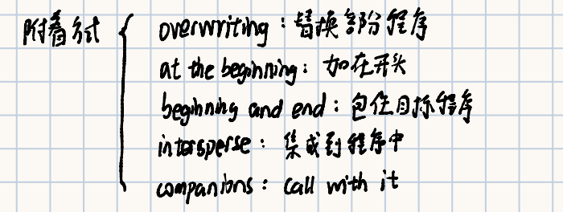 - Multipartitle Viruses 上述两种的集合
- TSR viruses 应用程序结束之后仍然在内存中保持活跃状态 terminate and stay resident
- Stealth viruses 隐藏文件感染的病毒
- Encrypted Viruses 对病毒进行加密，防止被安全软件识别出来，现在通过签名检测病毒是困难的
在有限时间内检测任意病毒的加密，是不可能的 - Polymorphic Viruses，每次复制都会改变形式的病毒
病毒是如何感染的，以及如何加密
Worm
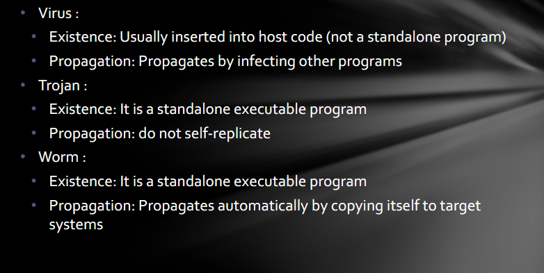
通过自动拷贝自身到目标系统来传播
先是对virus, trojan 和 worm做了一个比较，从Existance和Propagation
Robert Morris release a worm 第一个蠕虫
Code Red 1
使用Web的漏洞
Nimda
是用Email
还存在一些其他的恶意代码，比如用于耗尽系统资源的一些程序
Theory of virus detection
theory of virus detection
没有算法完美检测所有virus和malicious code
virus analysis
- 人力分析病毒
- 自动分析病毒 immune system
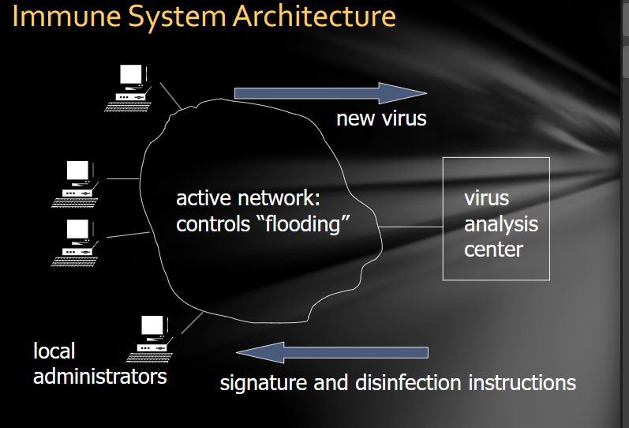
SandBox / virtual machine
有些语言运行在一些被保护的area，例如Java运行在JVM
js这种语言是运行在SandBox，浏览器的沙盒，无法访问浏览器限制以外的内容
限制一个程序的可访问的对象
botnets 僵尸网络 一组机器通过网络完成一件事情，其在网络上的检测是不太可能得。
DDOS distributed denial of service
defenses Means
-
distinguish between data, instruction
-
病毒必须要写入程序，只允许写入data，不允许执行data，执行需要审查
-
limit object accessible to processes
-
控制用户之间的信息流，比如在浏览器，虚拟机，SandBox中运行
- 仅给一个进程以最低权限，使其只能执行自己的功能，不能做多余的事情
-
Inhibit sharing
-
禁止共享，使用多层的安全机制
-
detect altering of files
-
计算一个文件的MDC，每次保存的时候都check一遍MDC的值是否相同
-
detect actions beyond specification
-
检测超出规范的操作，多版本编程验证正确性
-
Analyze statistical characteristics
-
分析统计特征
SPAM
垃圾邮件太多
Botnets DDOS and SPAM
botnets
network of autonomous programs capable of acting on instructions
通常是大型的远程控制的僵尸系统，用IRC等方式控制和更新
僵尸网络是很多攻击的平台
- DDOS
- SPAM
- 新漏洞和蠕虫的启动板
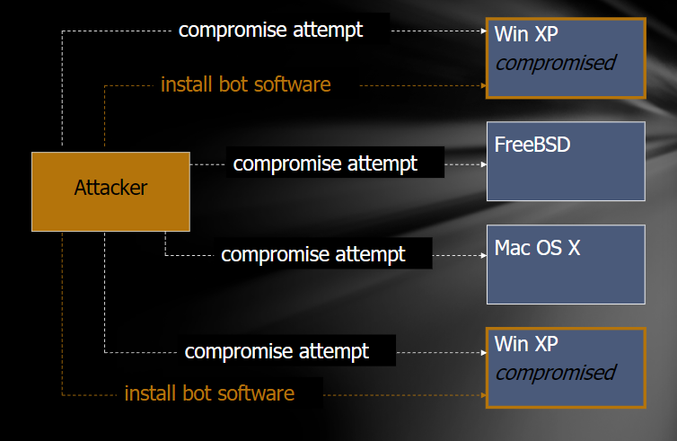
- 检查用户系统的漏洞（buffer overflows, email等），并且进入执行shellcode
- shellcode下载actual bot
- bot 禁用防火墙和杀毒软件
-
bot 定位IRC server，连接并且加入channel
-
用DNS找到server
- 认证码在bot的二进制代码中
- bot master 发出Authenticated command
僵尸网络的传播
- 每个bot自己就可以扫描IP空间进行传播
- 主动僵尸网络管理
DOS
Email Spoofing
SMTP没有内置的认证，
IP security
TCP/IP Protocol Stack
- 使用TCP/IP协议栈来route和connect
- 使用BGP来router discovery
- 使用DNS来找到通过域名找到IP address
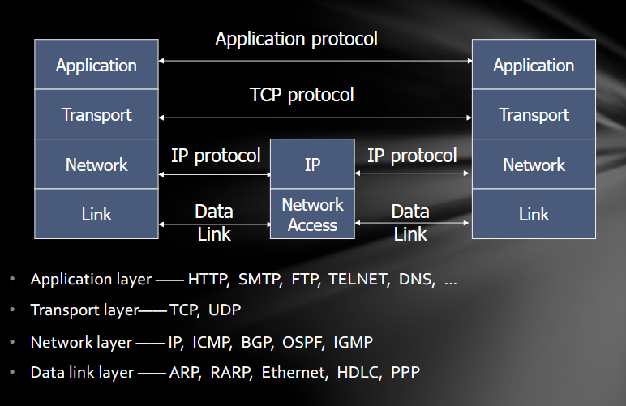
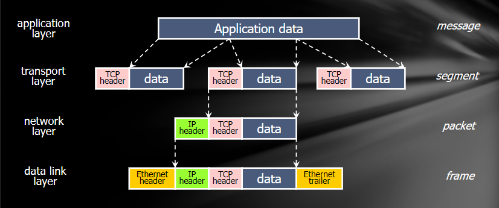
IP Internet Protocol
TCP/IP中的网络层协议，用numeric address 数字化的地址来routing
ICMP Control Message Protocol
对于 network operation 提供feedback
IP & TCP/UDP
IP负责传送
TCP是传输层，对于reliability and flow control 负责
- sliding windows
- sequncing numbers and acknowledgements
- synchronization
IP包中有一个Protocol field来明确这段是TCP还是UDP
User Datagram Protocol
IP 提供 routing
UDP 按照端口分隔流量
Minimal guarantees
TCP中包含
-
Sender：break data into segments
-
sequence number 附在每个包上
-
Receiver: 将Segments按照正确的order重新装配 reassemble
-
丢失数据重新发送
- 确认收到 acknowledge receipt
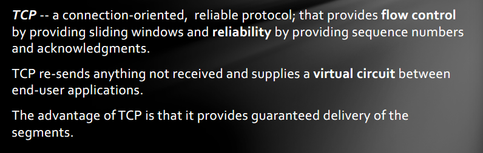
三次握手
两端需要通过各自的initial TCP sequence number去建立联系
Sequence number 是用来track packets' order保证没有packets被遗漏
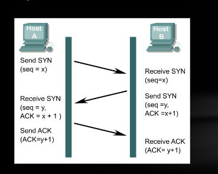
port number
DNS
将domain name map到numberic IP addresses
Security issues of TCP / IP
sniffing
许多传输的数据不是被加密的，比如使用HTTP协议的，通过一些抓包工具，比如WireShark，来截取信息
promiscuous mode network interface card can read all data混杂模式网络接口可以获取所有信息
ARP spoofing
ARP是将IP转到MAC的过程，OS通过ARP cache来实现ARP，不同的机器有不同的实现方式，有一些OS只接受第一个response package
通过伪造一个ICMP数据包，让某个机器发起ARP请求，再发送假ARP的相应，使得ARP缓存被破坏
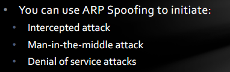
IP spoofing
将一台机器的IP地址，替换成其他机器的IP地址，隐藏发送方或者冒充另一个计算机身份
TCP SYN Flooding
攻击者在伪造IP地址的同时，发送大量请求，被攻击的主机会需要分配资源，一旦资源被耗尽，客户端就无法正常连接了
这是最经典的DOS攻击 发起者不消耗资源，接收方必须为每个请求创造线程，非对称的攻击
阻止的方法
- 当资源用完之后，随机删除一些线程，random delete, 容易实现
-
SYN cookies 服务器至少收到2条信息才存储状态
-
服务器把socket information 存在cookie中，再把cookie发回去
- 客户端必须把这个cookie再发回去一次，服务器重新计算之后再发送给客户端
- 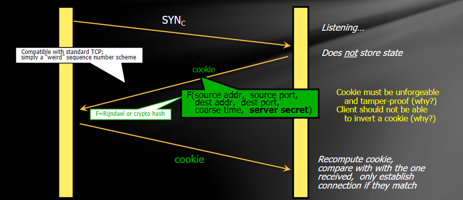
TCP SYN Prediction Attack
TCP的每个包里有序列号SYN，接收方将排序与根据SYN重组数据包，如果TCP协议中的序列号被攻击者预测，那么其就能伪造包发送给接收方，以达成自己的目的
该种攻击是很多其他攻击的来源
- TCP spoofing
- TCP connection hijacking
- TCP reset
主要的对抗预测攻击的方法是，随机生成SYN让prediction变得不可能
其中M是为微秒定时器，F为伪随机函数，使用单向hash函数实现
TCP congestion control
当发生丢包的时候，说明network is congested，此时TCP协议要求sender
- 通信速度持续减半，直到没有丢包或者速度降为0
- 如果不再丢包了，传输速度会缓慢增加
但是如果在有恶意用户不遵守协议，在他人和自己同时丢包的时候反而增速，那么就会限制他人的速度。
解决方法
- Add ack nonces，在ack的时候返回一个nonce，来证明其不是一个欺骗
DNS spoofing
修改DNS服务器或者本地DNS服务，一般就是修改DNS缓存数据库，将页面重定向到错误的IP，也即将信息发送到另一台机器，一般是攻击者的机器
解决方法：DNSSEC
- 其产生攻击的原因是DNS的响应和请求是没有认证（authenticated）的，但是DNSSEC使得每一次响应都需要认证
- 其本身不提供加密服务，也不会用在对抗DOS攻击上
IPSEC
IPSec是支持所有在IP层的加密encryption和认证服务authentication，其有三个核心组件
- Authentication Header AH 验证头
- Encapsulating Security Payloads ESP 载荷安全性封装
- Security Association SA 安全关联
AH
提供数据完整性和认证服务，可以有选择地提供anti-replay 反重放攻击 *
具体的细节内容见PPT 37
ESP
提供安全，保密和认证（optional）的服务
SA
用于集成安全服务 integrate security services，其中定义了一系列的算法和常数（包括密钥），对一个发送接受流进行加密和认证，如果需要双向的安全通信，那么需要两个SA
有三个参数在SA中唯一确定
- SPI security parameter index
- IP destination address
- Securiry protocol identifier 安全协议标志，确定AH or ESP
总之，SA是一组逻辑安全参数，能与另一个实体共享信息
Mode of operation
-
transport mode
-
该模式下仅保护IP packet content部分，不保护IP头，由于IP头没有被修改，路由过程不会被影响，传输层和应用层数据都受到保护，常用于 peer-to-peer 通信
-
tunnel mode
-
该模式会加密和认证整个IP packet，原始的IP packet将会被隐藏到新的IP packet，并且将附加新的IP头，常用于受保护的VPN，host-to-network, peer-to-peer 通信中
IPsec的优势
-
其可以用于增强和实现防火墙/路由器
-
所有通过边界的数据包的安全性都增强了 security-enhanced
- 收防火墙保护的主机无需处理安全问题
-
对于最终用户是透明的
-
构建IPsec网络上应用程序无需做多余的事情
- 自动保证保密性和完整性 confidentiality and integrity
SSL/TLS
TLS 就是传输层安全，它的前身是SSL，旨在为了TCP建立可靠的end-to-end安全服务，包括confidentiality, integrity and authentication
-
SSL connection
-
连接是提供适当类型服务的传输
- 是一个point-to-point的关系，连接是临时的，每个连接都和一个session相关联
-
SSL session
-
SSL会话是客户端和服务器之间的关联，会话由握手协议创建，会定义一组连接共享的密码安全参数
- 避免提供密码安全参数的昂贵谈判价格
SSL/TLS protocol stack
其本身是在传输层和应用层之间的，自身被分为两层
-
handshake layer
-
相互验证，协商加密算法，定义了三个子协议
- 使得服务器和客户端相互验证
- 协商加密算法，MAC算法，和加密密钥
- 在应用程序数据传输之前执行握手协议
- 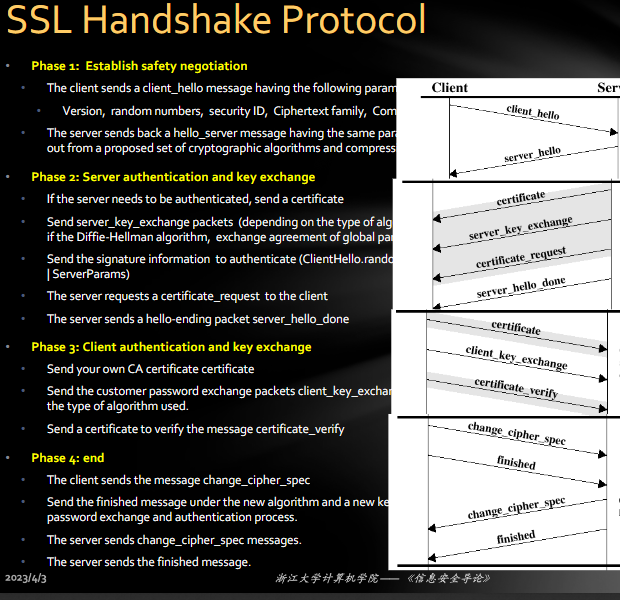
-
record layer
-
接受并加密应用层的信息，并且发送给传输层
-
Malicious code
所有违反站点安全策略的指令集合
Trojans, Viruses and worms
Trojan horse
有着公开目标 overt purpose, 和非公开目标 covert purpose 的程序
replicating trojan horse是指那些trojan horse can make copies of itself, 木马的复制是难以检测的
例如 Thompson's compiler，就通过修改编译器的拉个
trojan horst concealing——rootkit
rootkit 是一组木马程序的二进制可执行代码 主要特点是 stealth
如何检测和移除 rootkit
- 基于行为，签名，完整性等进行检测
- 使用一些安全软件的服务，使用一个干净的文件系统来杀木马，重装系统
virus
一个程序，将自身插入其他的文件中，使其有其他不同的actions
- the insertion phase 这个阶段是必须有的
- the execution phase 有可能不进行任何操作，这个阶段不一定有
有各种不同的virus，这里介绍了其中几种
defense of Malicious code
虽然不存在完美的算法，但是还是存在一系列means去处理
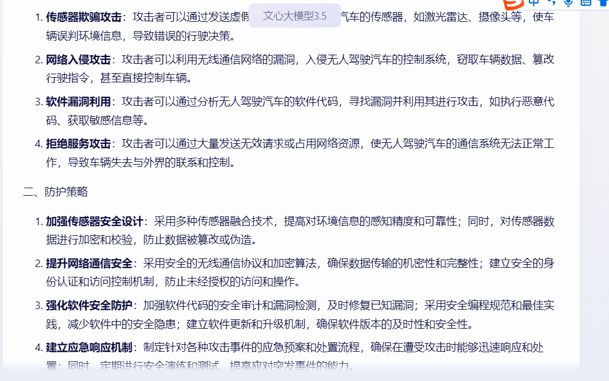
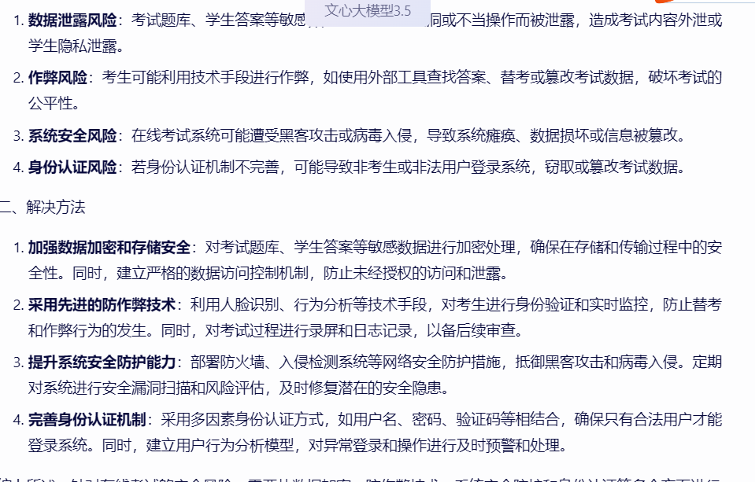
僵尸网络 DDOS SPAM
期末复习
-
计算机安全
-
密钥是经常变的
- elements 安全 分析系统的安全性，根据这几个element来分析
- concept 讨论安全的方面
- 不同的攻击方式，被分为passive和active
-
密码
-
密码学的概念
- 公钥密码学
- 私钥和公钥的区别
- 数字签名
-
认证和授权访问控制
-
概念
-
网络
-
常见的攻击
- IPSEC
- TLS/SSL connection和session 连接和对话
- Malicious Code
可以回答英文单词
应用：分析某个东西，会有哪些安全问题
对称密钥的问题
- 其问题在于人们必须要安全地共享一对密钥，而这个共享工作本身也是需要加密的
- 并且存在对称密钥的话，接收方也可以伪造数据，发送方无法证明自己没有发送给接收方，因为接收方自己也可以通过该密钥创造信息